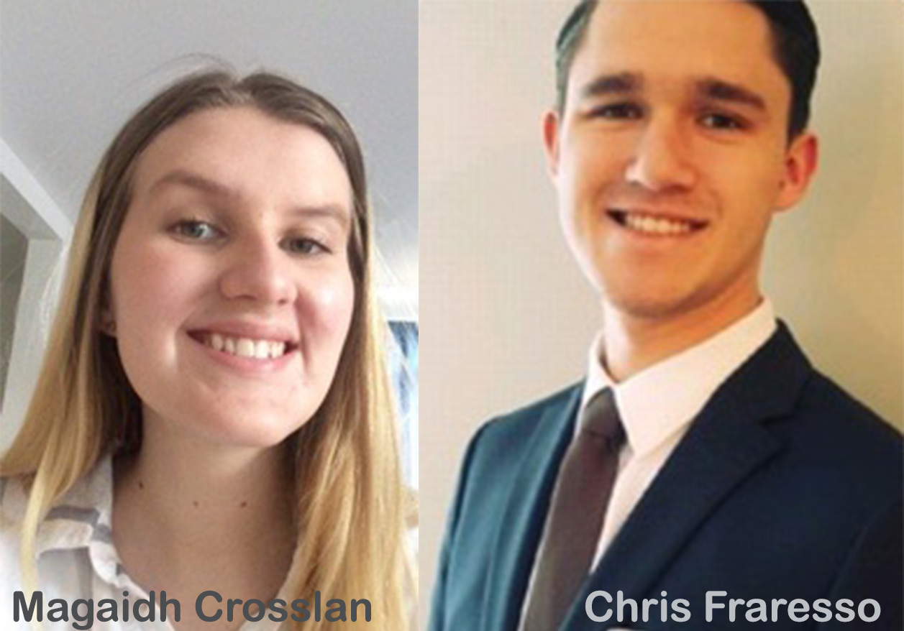
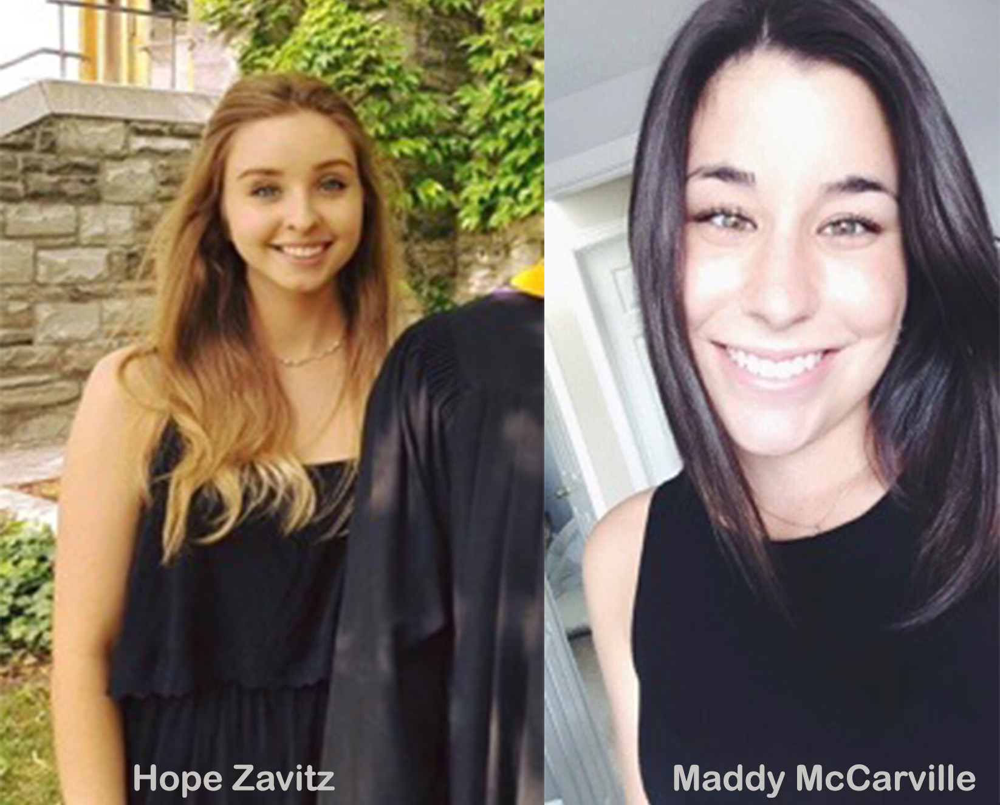

"Hi, my name is Brooke and I am going into my fourth year of Chemistry. Between working at the IT Help Desk at the University and watching Netflix, I served as the Secretary for the Model UN Exec this past year. I am honoured to be your president for the upcoming year, and cannot wait to announce all the new and exciting things planned for the next year!"
"Hey, I'm Cassidy and I’ll be your Treasurer for the upcoming year. I’m currently in fourth year completing a Bachelor of Arts and Science. My areas of emphasis are biology and international development. When I’m not working on club finances, I’m either up north swimming or boating around lakes. I’m very excited for the year to come and for all the new ideas our team will be bringing to the table!"
"My name is Chris Fraresso, I’m going into my third year of Criminal Justice and Public Policy with a minor in Philosophy. I work in a suit shop and spend most of my free time reading and watching movies. I look forward to another kick ass year in MUN!" "Hi everyone, my name is Magaidh and I am excited to serve as Co-Director of Training for the 2018-2019 season. I am a first year Environmental Engineering student with 6 years of Model UN experience. Can’t wait for next year!"
"Hey delegates, my name is Maddy and I will be your Director of Communications for the 2018-2019 year. I am in International Development and minoring in Business. I love to travel and debate of course. I look forward to an awesome year ahead with all of you!!"
"My name is Hope and I’m in my fourth year of Marketing Management. I’m currently working at an Experiential Marketing Agency in downtown Toronto for my co-op placement. I can’t wait to be part of the exec team for Model UN next year and get started on our exciting marketing initiatives!!"
"n/a"